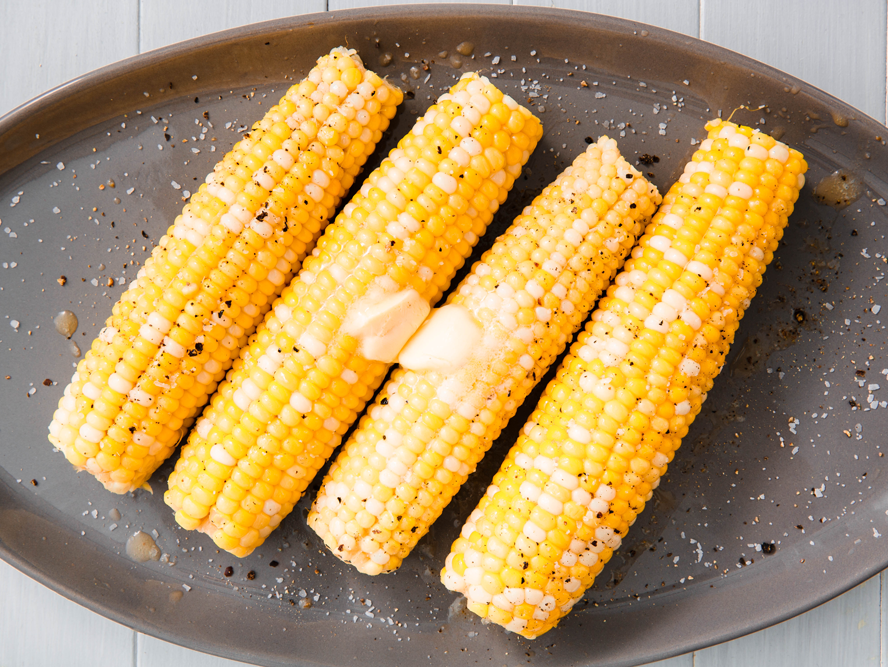

Corn on the Cob

Description
If you want to make the easiest corn on the cob, here's something I've known for years — no matter how great a kitchen technique is, unless you use it regularly, you'll forget about it! This technique for making corn on the cob works perfectly, and I hope you give it a try soon.
Ingredients
- 1 ear fresh corn, in the husk
- 1 teaspoon butter, or more to taste
- salt to taste
Steps
- Microwave ear of corn on high until cooked through and tender, about 3 1/2 minutes.
- Transfer ear to a cutting board. Hold the tapered end with a towel and cut 1 inch off the bottom of the thick end. Squeeze the tapered end until the ear comes out of the husk and silk.
- Spread butter over corn and season with salt.